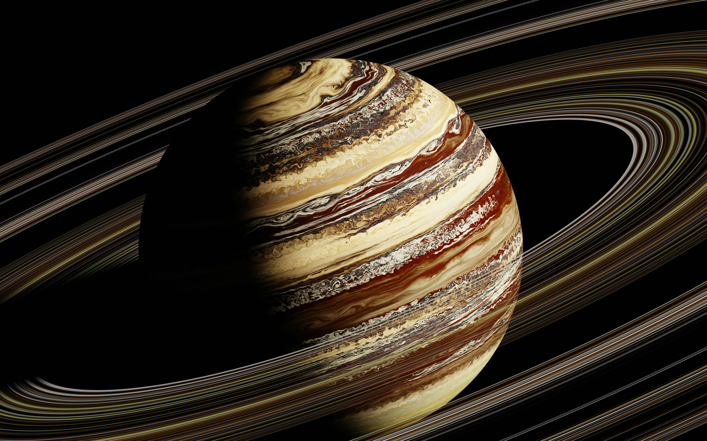
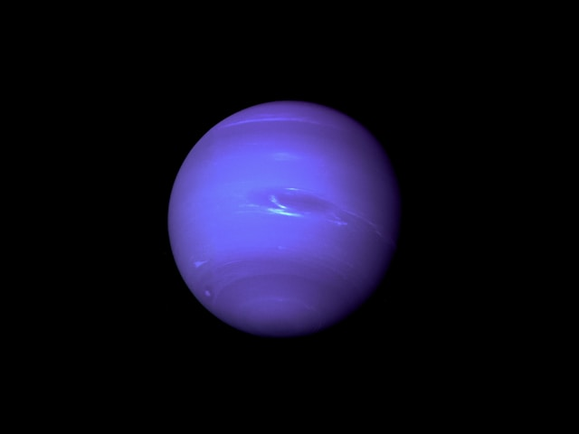
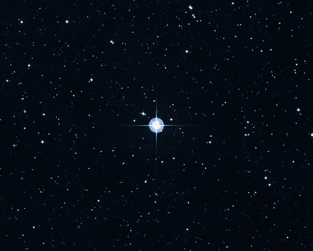
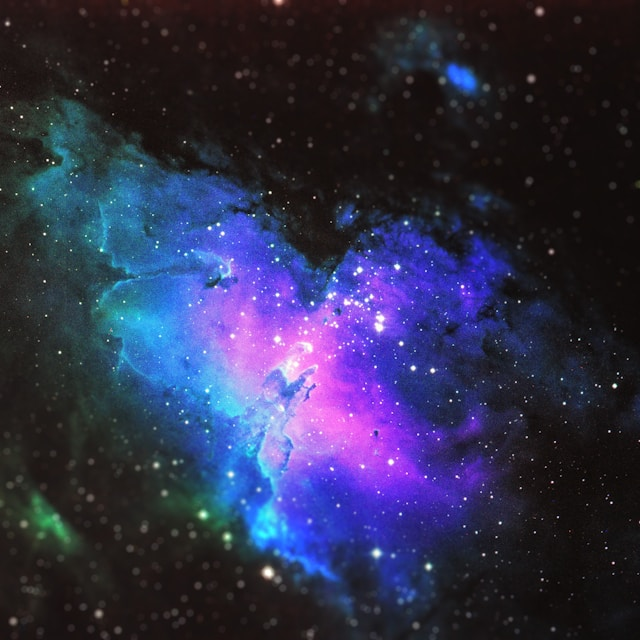
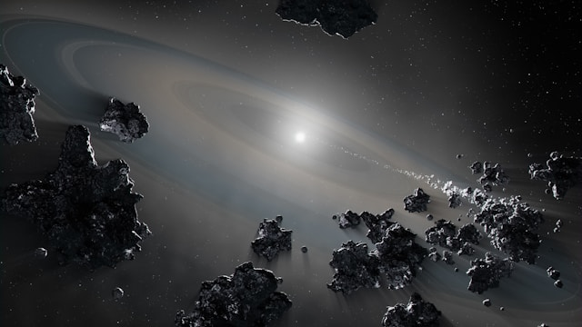
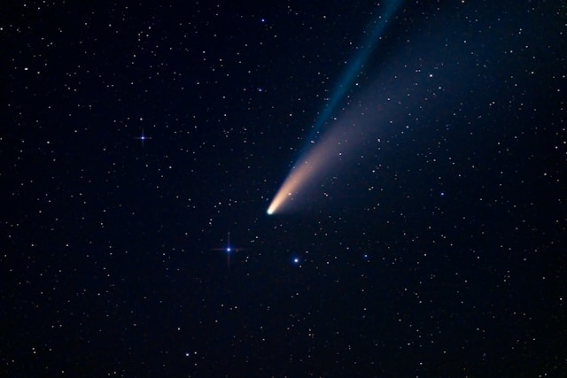
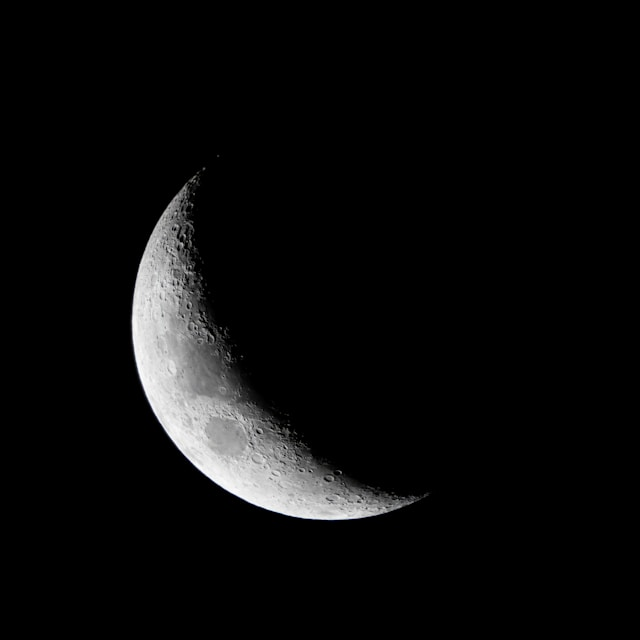
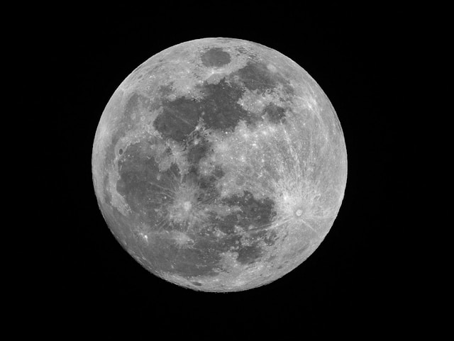
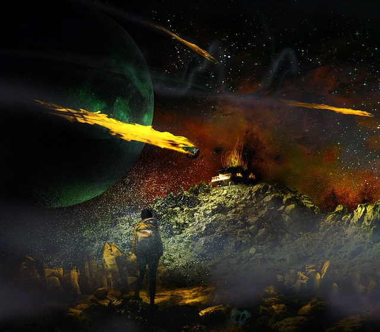
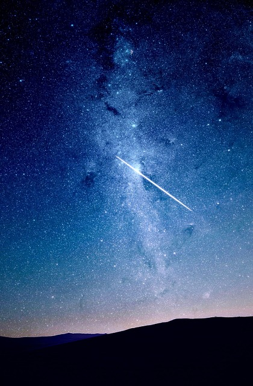

Explore amazing and mind‑blowing facts about space, planets, stars, and astronauts with AstroSpace

Planets
Jupiter

Jupiter is the largest planet and it is famous for it's Great Red Spot
Key facts
- Protects inner planets
- Has the famous storm
Neptune

Earth is a life supporting planet mostly known for water
Key facts
- Named after the Roman god
- It is very cold and dark
Uranus

Uranus is the first planet to be discovered through a telescope
Key facts
- It is mostly blue in color
- It is extremely cold
Saturn

Saturn has an extensive icy ring and it's the second largest planet
Key facts
- It has the largest moon:Titan
- Has powerful winds
Stars
Stars are huge balls of hot gas that produce light and energy through nuclear reactions
Shooting stars

A shooting star is not actually a star. It's a small space rock called a meteoroid that burns up when it enters Earth’s atmosphere. The bright streak of light we see in the sky is a meteor
White dwarf stars

A white dwarf is the small, extremely dense remnant of a star that has reached the final stage of its life. Most stars in the universe—including our Sun—will eventually become white dwarfs
Neutron stars

It is one of the most extreme objects in the universe. It forms when a massive star explodes at the end of its life. Even though neutron stars are very small, they are heavy and have strong gravity
Aurora Borealis

The Aurora Borealis is a natural light display that appears in the polar regions of Earth. Its colorful lights—green, pink, red, or purple—dance across the night sky, creating one of the most spectacular natural phenomena on planet
Nebulae

Nebulae is a huge cloud of gas and dust in space. Nebulae are some of the most beautiful objects in the universe and play a very important role in the life cycle of stars. They can be the remains of stars that have died
Asteroids

Asteroids are rocky objects that orbit the Sun. They are much smaller than planetsand are often called minor planets. Most asteroids are leftovers from the early formation of the solar system between 4.6 billion years ago to 6 billion years ago
Comets

Comets are often called “dirty snowballs because of their icy and dustycomposition. When a comet comes close to the Sun, it becomes bright and develops a glowing tail, making it one of the most beautiful sights in the night sky
The Moon
Cresent Moon

A crescent moon is a phase of the Moon in which less than half of the Moon is illuminated by the Sun and visible from Earth. It looks like a thin, curved sliver, often resembling a smile or a banana shape in the sky
Full Moon

The full moon shines brightly when Earth sits between the Sun and Moon, lighting the night sky, inspiring cultures, guiding calendars, and creating a powerful, beautiful symbol ofmystery, balance, and wonder
Half Moon

The half moon appears when only half of the Moon’s surface is illuminated by the Sun, shaping tides, guiding calendars, and offering a striking balance of light and shadow in the night sky
Meteorite

A Meteorite is a rock or dust which colludes in space releasind stellar streaks of light which appear as frail glowing tracks through the sky and can also reach earth as massive rocks which are supper hot
Galaxy

A galaxy is composed of the celestial bodies such as the sun and the eight planets. Galaxy usually appears glowing and appealing to the eyes due to the light illuminated from the celestial bodies
Super Nova

Super nova is a luminous colossal explosion which marks the death of a big star. A super nova can last at least for a few weeks and at most it can take several months depending on the size of the exploding star
About Space
Space science is a wide yet captivating and mind blowing.
Space is the vast, mysterious universe that exists beyond Earth’s atmosphere. It contains everything we know stars, planets, moons, galaxies, asteroids, comets, and black holes. Space has no air, no sound, and almost no gravity, making it very different from life on Earth.
AstroSpace "in mind with the future beholders"
Contact Us
Link with AstroSpace through


- Improve technology(GPS and Communication)
- Learn about the origin of the universe
- Prepare for future exploration of space bodies